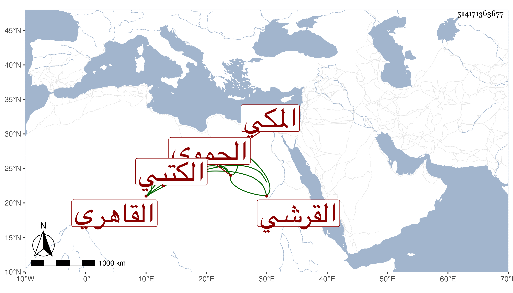

0902Sakhawi.DawLamic.ITO20230111-ara1.EIS1600.514171363677
Biography ID: 514171363677
911
سالم بن محمد بن محمد بن سالم بن محمد الزين القرشي الحموي المكي ثم القاهري الكتبي بن الضيا أخو أحمد الماضي . ولد قبل التسعين وسبعمائة ، وأجاز له المجد اللغوي وأبو بكر المراغي وابن سلامة وشعبان الآثاري ومحمد بن أحمد ابن محمد الرازي وتكسب بصناعة تجليد الكتب ، وكان ساكنا ضعيف الحركة أحد صوفية سعيد السعداء أجاز لنا ومات في شعبان سنة ست وسبعين رحمه الله .
